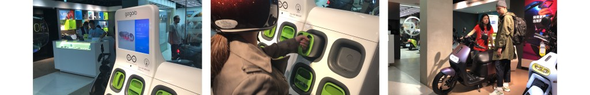
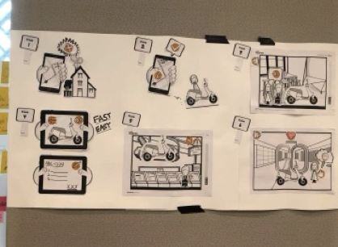
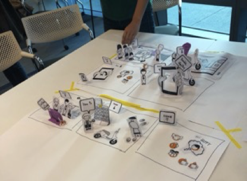
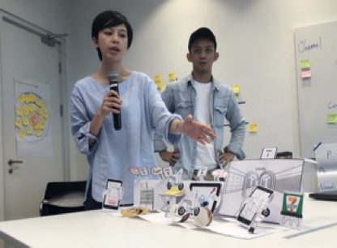
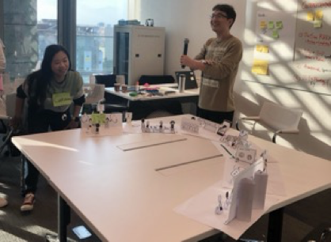

Sustainable mobility: design thinking with Gogoro
Gogoro, Taiwan's electric-scooter company, wanted to improve the whole customer journey from pre-purchase to maintenance. I led field research and an Explore workshop to find and prioritize innovation opportunities.
- Role
- Design lead, researcher, workshop facilitator
- Platform
- Web, mobile
- Duration
- 12 weeks

Rethinking every touchpoint
Discover innovation opportunities across Gogoro's touchpoints — retail stores, maintenance, customer service and online and offline channels — to create a superior customer experience as the electric-scooter business grew.
Gogoro and SAP met at SAP Taiwan for a one-day design thinking workshop. It began with empathy: a visit to a retail store the day before. Participants then ideated and rapid-prototyped from each persona's point of view, and narrowed down use cases for further engagement.

Four ideas from the workshop

After booking, owners get a predicted maintenance time so they wait less in the store, and sign all related files digitally.

Owners scan a QR code on the scooter for a self-help guide built from feedback and past cases — fewer helpdesk calls and faster answers.

Convenience stores host battery changes and basic maintenance, so owners get service while they shop and wait less at retail stores.

Policies on electric-scooter sales change often. A dedicated channel, with communication tracked in sales managers' reviews, keeps salespeople up to date.
What Gogoro gained
- Users' pain points and innovation opportunities discovered, and use cases prioritized.
- A full experience of SAP design thinking with the AppHaus team.
- Use cases explored through visual storyboards, ready to become proofs of concept.
“The design thinking workshop delivered by the SAP AppHaus team was far beyond my expectations! I believe all participants from Gogoro learned a lot through the practice and methodology.”